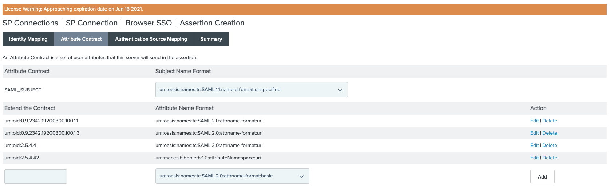
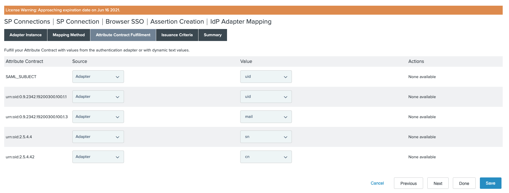
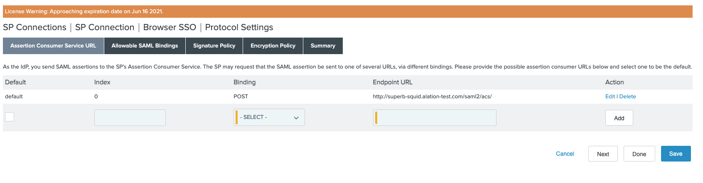
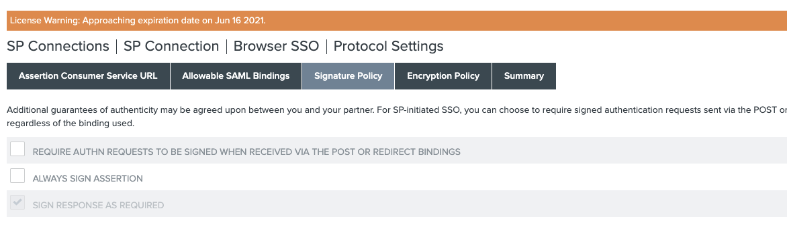
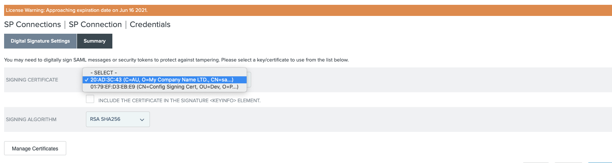
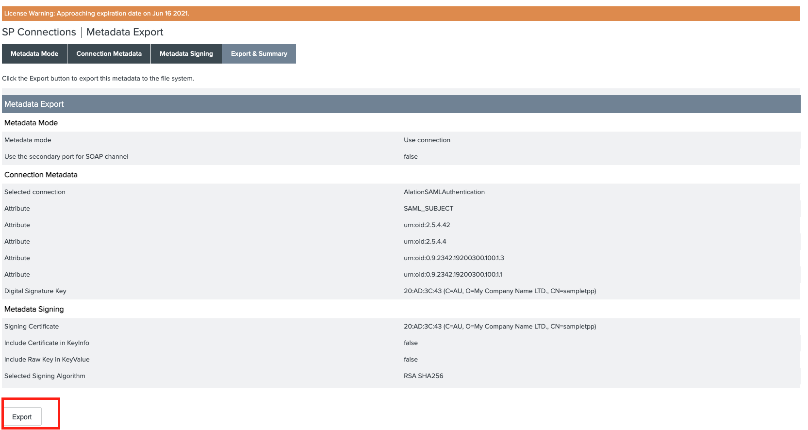
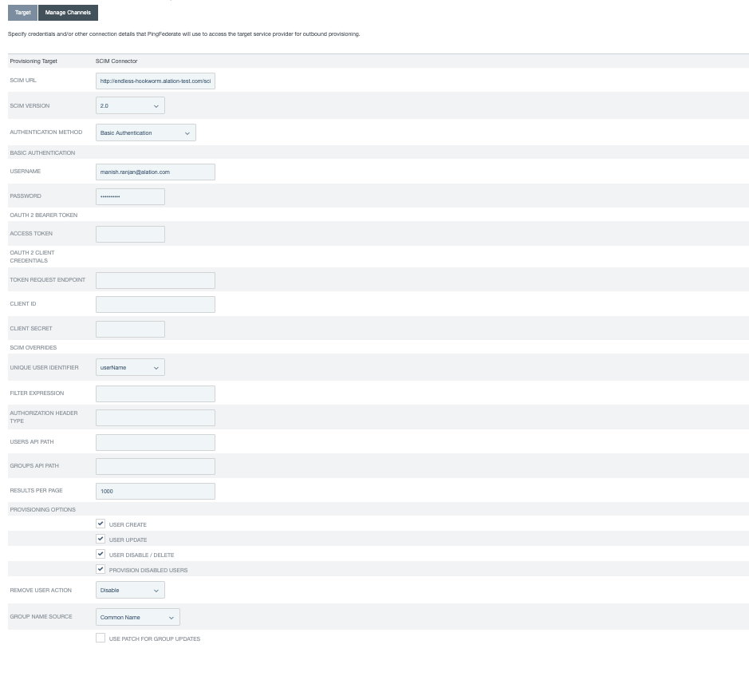
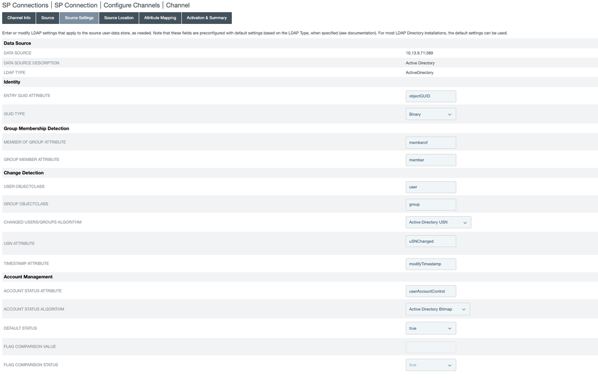
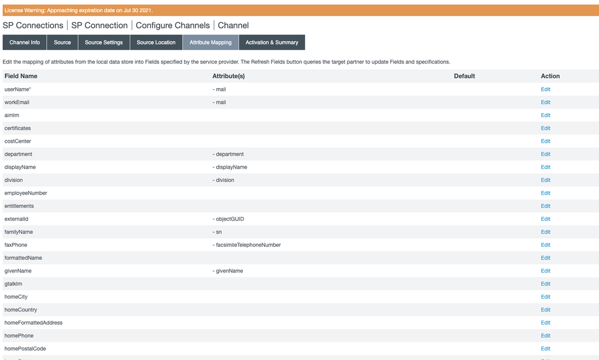

Set Up SAML and SCIM Integration in PingFederate¶
Alation Cloud Service Applies to Alation Cloud Service instances of Alation
Customer Managed Applies to customer-managed instances of Alation
Available from version 2021.3
Create a SAML Application Integration¶
Use this section to create and configure a SAML application integration in PingFederate for user authentication with SAML on the Alation server.
To perform this configuration, you may need the assistance of your PingFederate admin.
Log in to PingFederate as an admin and in the administrative console, go to Applications > Integration > SP Connections.
Click Create Connection:
On the Connection Template tab, click Do not use a template for this connection. Click on Next.
On the Connection Type tab, select the Browser SSO Profiles check box.
From the Protocol list, select SAML 2.0. Click on Next.
On the Connection Options tab, leave the Browser SSO checkbox selected, and then click Next.
On the Import Metadata tab, select None. Click Next.
On the General Info tab, provide the information below and click Next:
PARTNER’S ENTITY ID =
http://alation.com/CONNECTION NAME =
name_of_the_sp_connection_app
On the Browser SSO tab, click Configure Browser SSO.
On the SAML Profiles tab, select the IdP-Initiated SSO and SP-Initiated SSO checkboxes. Click Next.
On the Assertion Lifetime tab, leave the default entries, and then click Next.
On the Assertion Creation tab, click Configure Assertion Creation.
On the Identity Mapping tab, click Standard. Click Next.
On the Attribute Contract tab, add the following attributes in the following format:
Click Next.
On the Authentication Source Mapping tab, click Map New Adapter Instance.
On the Adapter Instance tab, from the Adapter Instance list, select your previously configured HTML form adapter. Click Next.
On the Mapping Method tab, leave the default selection and then click Next.
On the Attribute Contract Fulfillment tab, configure the required SAML attributes. Use the table below as an example. Your configuration may be different depending on the Source.
Attribute Contract
Source
Value
SAML_Subject
Adapter
uid
urn:oid:0.9.2342.19200300.100.1.1Adapter
uid
urn:oid:0.9.2342.19200300.100.1.3Adapter
mail
urn:oid:2.5.4.4Adapter
sn
urn:oid:2.5.4.42Adapter
cn
On the Issuance Criteria tab, click Next.
On the Summary tab, review your information, and then click Done.
On the Authentication Source Mapping tab, click Next.
On the Summary tab, review your information, and then click Done.
On the Assertion Creation tab, click Next.
On the Protocol Settings tab, click Configure Protocol Settings.
On the Assertion Consumer Service URL tab, add the ACS URL:
https://<BASE_URL>/saml2/acs/:On the Allowable SAML Bindings tab, make sure that POST is selected. Click Next.
On the Signature Policy tab, leave the defaults. Click Next.
On the Encryption Policy tab, click None. Click Next.
On the Summary tab, review your entries, and then click Done.
On the Protocol Settings tab, click Next.
On the Summary tab, review your information, and then click Done.
On the Browser SSO tab, click Next.
On the Credentials tab, click Configure Credentials.
On the Digital Signature Settings tab, from the Signing Certificate list, select
20:AD:3C:43 (C=AU, O=My Company Name LTD., CN=sa...)On the Summary tab, review your entries, and then click Done.
On the Credentials tab, click Next.
On the Activation & Summary tab, click the toggle to enable the connection, and then scroll to the bottom and click Save.
You will be redirected to the Applications home page with the newly created SP connection.
For the SP connection created, click on the Action tab, select Export Metadata.
On the Metadata Signing tab, select the signing certificate same as above and click Next.
On the Export and Summary tab, click on the Export button on the bottom left side. You will get an XML file which is the required idp_metadata file for the Alation instance.

{kind=link}
{kind=link}
{kind=link}
{kind=link}
{kind=link}
{kind=link}
{kind=link}
Create a SCIM Integration¶
Deploy SCIM Connector¶
Before creating a SCIM Integration in PingFederate, add the SCIM connector to the server using the information in Deploying the integration files.
Create a SCIM application¶
Prerequisites¶
An AD server with groups and users
A data store has been set up in PingFederate
Creating the App¶
In the PingFederate administrative console, go to Applications > Integration > SP Connections.
Click Create Connection.
On the Connection Template tab, select USE A TEMPLATE FOR THIS CONNECTION and select SCIM from the dropdown. Click Next.
On the Connection Type tab, do not change the default selection of OUTBOUND PROVISIONING. Click Next.
On the General Info tab, enter the values for:
PARTNER’S ENTITY ID (a text value)
CONNECTION NAME (a text value)
Click Next.
On the Outbound Provisioning tab, click on Configure Provisioning.
On the Target tab, enter the following details:
SCIM URL = http://hostname/scim/v2
AUTHENTICATION METHOD = Basic Authentication
USERNAME = alation username
PASSWORD = alation password
UNIQUE USER IDENTIFIER = userName
Click Next.
On the Manage Channels tab, click on Create Channel.
On the Channel Info tab, provide the channel name. Click Next.
On the Source tab, select the Active Data Store as per your data source configuration.
On the Source Settings tab, leave the default values. Refer to the screenshot below.
On the Source Location tab, enter the value for:
BASE DN
GROUP DN
On the Attribute Mapping tab, map the necessary AD attributes to field names.
On the Activation & Summary tab, select Channel Status to be ACTIVE.
Click on Done and Next.
On the Activation & Summary tab, click on Save.
Go to the directory server and create a user inside the group the DN of which is specified on the SCIM application.
The added user should be created in Alation and visible in the Licensed Users list in Admin Settings > Users.
{kind=link}
{kind=link}
{kind=link}
{kind=link}
{kind=link}
{kind=link}